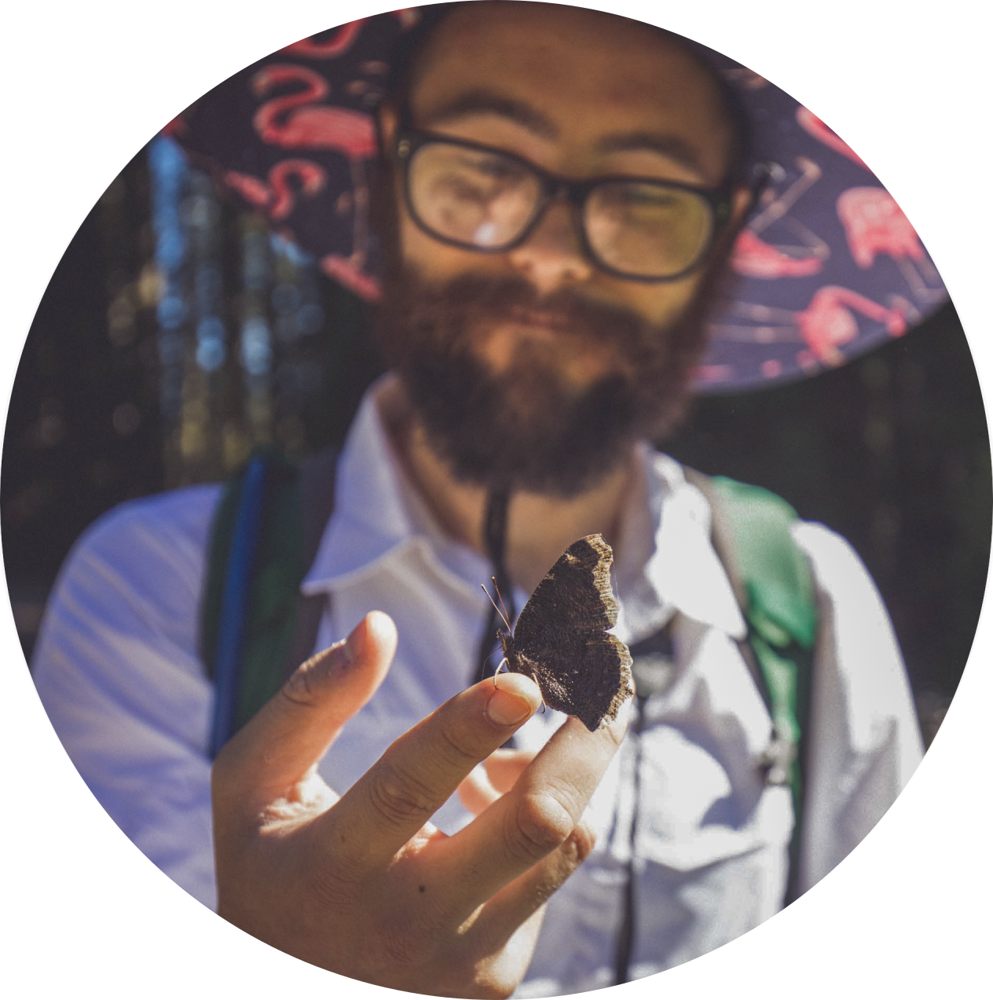

Dr. Eliza Grames (she/her)
Principal InvestigatorEliza is an integrative biologist using quantitative methods, evidence synthesis, and long-term data to understand the effects of rapid environmental change on biodiversity, with a special emphasis on the causes of insect decline and consequences for insectivorous birds.
Dr. Chris Halsch (he/him)
Postdoctoral Associate Chris is an ecologist interested in the drivers of long-term insect population trends, especially in the Western United States. He is currently finding ways to spend as much time as possible in the mountains looking for butterflies.
Julianna Yager (she/her)
PhD Student Julianna's research interests lie in using computational models to investigate the cascading effects of climate change on insect dynamics which subsequently influence bird populations. By researching these relationships, she aims to contribute to a deeper understanding of how ecosystems respond to environmental shifts and the far-reaching consequences of climate change.
Julianna's research interests lie in using computational models to investigate the cascading effects of climate change on insect dynamics which subsequently influence bird populations. By researching these relationships, she aims to contribute to a deeper understanding of how ecosystems respond to environmental shifts and the far-reaching consequences of climate change.
Joe Elias
PhD StudentJoe's research focuses on understanding how insect dynamics, particularly those of Lepidoptera, are influenced by anthropogenic factors (i.e., climate change, suburban-urbanization, agriculture). He aims to develop computational and metabarcoding tools to collect and analyze data on Lepidoptera populations across urban gradients. His goal is to investigate the ecological implications of these responses, including potential trophic interactions.
Alison Kryger (she/her)
Honors Thesis StudentAlison is a double major in Biology and Environmental Science with an interest in ecosystem interactions and plant distributions. She is currently working on independent research focused on plant communities on rock walls/cliff faces.
Suyeon Jang
Undergraduate Student Suyeon is majoring in biology with interest in conservation biology, genetics, physiology and understanding how organisms respond to environmental stressors. She's currently working on scientific illustrations of insect species that are of conservation concern as an independent study.
Suyeon is majoring in biology with interest in conservation biology, genetics, physiology and understanding how organisms respond to environmental stressors. She's currently working on scientific illustrations of insect species that are of conservation concern as an independent study.
Jacqueline Justo
Undergraduate StudentJackie is documenting the diversity of bees across different habitats on campus and studying the effects of urbanization on plant-pollinator networks.
Jorden Julien
Undergraduate StudentJorden is working on the relationship between environmental contaminants, aquatic insects, and waterbirds.
Casey Lau
Undergraduate StudentCasey is majoring in Biology with an interest in animal behavior, species interactions, and conservation. She is working on the EntoGEM project and administration of the Status of Insects Research Coordination Network.
Peter Pavlatos
Undergraduate Student Peter is working on using large language models (LLMs) to automate abstract screening for the EntoGEM project.
Peter is working on using large language models (LLMs) to automate abstract screening for the EntoGEM project.
Maggie Hines
Undergraduate StudentMaggie is working on a literature review of extinction and extirpation predictions in collaboration with the Logan Lab.
Jennifer Slater
Undergraduate StudentJennifer is a BUPNUR student working on automated insect monitoring methods.
Lab alumni
- Emma Foster, Honors Thesis 2024 (current: PhD student at University of Michigan)
- Esha Gandham